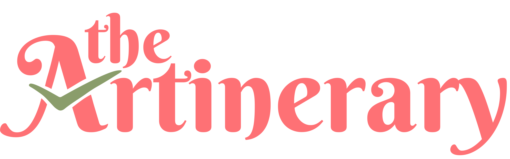
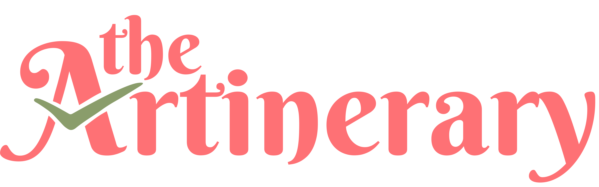

Frequently Asked Questions
- Do I have to pay to use the journal?
- Not at all! The Artinerary journal is completely free to use.
- Can I download the journal more than once?
- Yep! You can download it once, twice, or a gazillion times if you want to. ;)
- Can I print the Artinerary journal?
- Yes! The Artinerary journal was created with it being printed in mind. Feel free to make your own physical copy using any paper you want.
- Can I share and post photos/screenshots of the journal on social media?
- Go ahead! We’d love to see how our journal is helping you stay organized as a digital artist. Don’t forget to tag us on Twitter if you’ll be sharing it there, too!
- Can I be a featured artist in the journal?
- Unfortunately, we are not open for collaborations with other artists for now. But you can check our Twitter for any future updates.
- What are your socials?
- We currently only have one social media account, which you can find on Twitter.
- Are you guys artists too? Where can I follow you?
 
